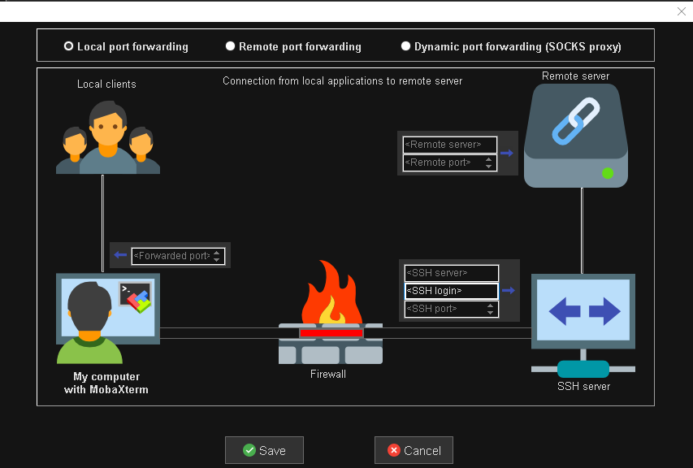

Run STAR-CCM+ in Client-Server Mode¶
This tutorial shows how to run STAR-CCM+ on a remote HPC cluster in server mode and control it from a local GUI. The GUI connects to the compute nodes throgh an SSH tunnel.
1. Prerequisites¶
This instruction uses the LCRC Improv cluster with PBS for job scheduling. The local workstation has STAR-CCM+ installed. MobaXterm is used to create the SSH tunnel for the client-server connection.
Before you begin, confirm the following:
- A valid
STAR-CCM+licence. - Same
STAR-CCM+version (including patch level) on both local and HPC sides. - SSH access to the cluster (and to a bastion/jump host if required).
- Ability to submit and monitor jobs in the HPC login nodes.
- Do not run compute- or memory-intensive jobs on the login nodes.
The software and supporting utilities used in this workflow are listed below:
| Software/utility | Version | Localtion |
|---|---|---|
STAR-CCM+ |
18.04.009-R8 |
Remote / Local |
PBS |
2022.1.7.20241016134739 |
Remote |
MobaXterm |
v24.2 |
Local |
2. Procedures¶
2.1 Launch the STAR-CCM+ server on the HPC cluster¶
Prepare a PBS job script that specifies the required nodes, cores per node (ppn), and walltime. Replace <queue_name>, <project>, <#>, <##>, <##>, <HH:MM:SS>, <your_email>, <port_number>, ${STARCCM+_LICENCE}, ${STARCCM+_FULL_PATH}, and ${STAR_SIM_FILE} with actual values in the following pbs_ccm_server script:
pbs_ccm_server in LCRC Improv cluster
Submit the script with qsub pbs_ccm_server. After the job starts, status and connection details are written to ccm_server.out, for example:
2.2 Create the SSH tunnel¶

The SSH tunnel is created by using MobaXterm. In the Tunneling dialog, create a new tunnel of Local port forwarding with the following settings:
| Property | Value |
|---|---|
<Forwarded port> |
<port_number> in pbs_ccm_server |
<SSH server> |
improv.lcrc.anl.gov |
<SSH login> |
$USER in improv.lcrc.anl.gov |
<SSH port> |
22 or leave it blank |
<Remote server> |
i822.lcrc.anl.gov |
<Remort port> |
<port_number> in pbs_ccm_server |
After tunnel creation, add the SSH key file and enable Autoreconnect in Settings.
2.3 Connect remote server with local STAR-CCM+ GUI¶
Launch the local STAR-CCM+ GUI, then:
- Go to
File -> Connect to Server... - In the
Connect to Serverdialog:Host:localhostPort:<port_number>set inpbs_ccm_server
- Click
OK.
Now the local GUI should be connected to the remote compute nodes.